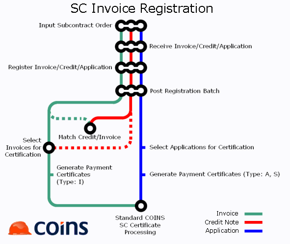

Subcontract Invoice Register
The subcontract invoice register allows you to record invoices for purposes.
Summary of the process

The subcontract is set up as normal (either directly using Subcontract Maintenance or from SC procurement). The billing type on the subcontract controls the type of transaction that can be registered.
- You receive from the subcontractor an invoice, credit note or application, and enter them as a registration batch using Enter Invoices and Credit Notes, before distributing them to surveyors for checking and certification.
- At this point the transactions can be provisionally costed, and you can post entries for invoices and credit notes (applications will not make any postings).
- Then you post the registration batch: this makes the accounting entries and prevents the transactions being changed or deleted.
- The treatment is different depending on whether you are dealing with an application for payment or an invoice.
- Invoices can be selected for certification (in full or in part) using Invoices Awaiting Certification. Any uncertified part will be available for later certification (or cleared by a credit note for purposes). Multiple invoices (and credit notes) can be added to a payment certificate which is processed as normal.
- Registered applications can be selected for payment (in full or in part), and you can then generate payment certificates. The payment certificates (which can be either draft or final certificates) are then processed as normal.
Invoice register set up
SC Configuration
- Populate the "Invoice GL Account Details" tab with the relevant control account codes. Either Post Detail against each control account to pass individual transactions to the control account, or un to pass batch totals to the control account. Post Invoices to GL/JC.
- Open and save the SC Ledger Configuration page to automatically generate new the Batch Types required for SC Invoice Registration (see below).
SC Batch Configuration
- Check that Batch Types "SCINV" and "SCUNREG" exist. If not, open and save the SC Configuration page.
- Update the settings on these two new batch types if required.
Transaction Types
- Create new Transaction Types as required for each of the new Batch Types, for example:
- SCI SC Register Invoice (SCINV, Debit, Invoice)
- SCC SC Register Credit Note (SCINV, Credit, Invoice)
- SCA SC Register Application (SCINV, Debit, Application)
- SCUN SC Un-register Invoice (SCUNREG)
- Leave both control account fields on each transaction type blank.